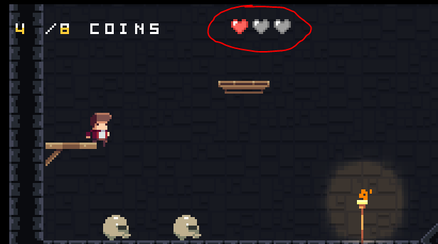
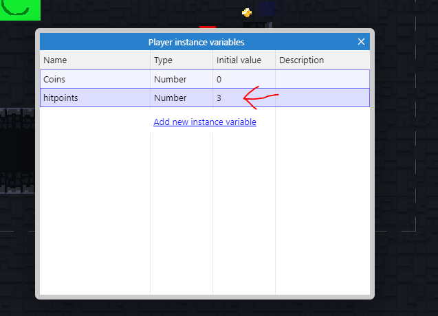
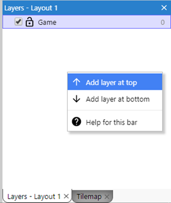
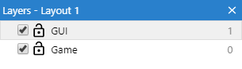
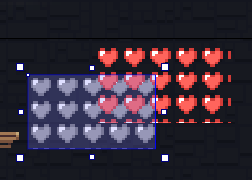
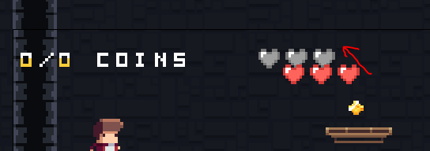
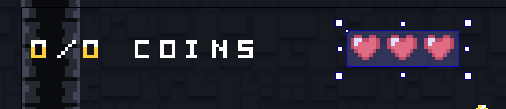
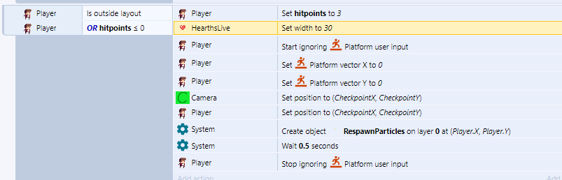

Aula 5 - Vida e Morte
Sistema de vidas
Nesse jogo o jogador terá 3 vidas, vamos representá-las por uma barra de corações da seguinte forma:

para fazer isso o primeiro passo é adicionar uma variável de instância ao Player da seguinte forma:

O nome da variável será hitpoints e receberá um número representando a quantidade de vidas que o jogador tem, nesse caso, 3.
Vamos criar uma nova camada para receber essa barra. Faça da seguinte forma:


Vamos adicionar a barra de vida, você deve garantir que a camada GUI está selecionada, ao clicar no nome dela tudo que for adicionado será nesta camada.
Você precisará adicionar dois objetos do tipo TiledBackground:
- No primeiro use a imagem em
heart-sheet1.png e dê o nome
e dê o nome LifebarEmpty
- No segundo use a imagem em
Items/heart-sheet0.pnge dê o nomeLifebarFilled
Redimensione o resultado para apenas três corações aparecerem em cada imagem e sobreponha as duas da seguinte forma:



Agora, se tirarmos uns dos corações vermelhos, a imagem que está por baixo será mostrada.
Precisaremos alterar o bloco que lida com a morte do jogador:

Agora o bloco será executado quando o jogador cair da plataforma ou se tiver um número menor ou igual a zero como hitpoints, você pode estender isso adicionando algo do tipo "quando o jogador cair na lava"
Nesse caso, os hitpoints voltam a ser 3 e por conta disso a barra de vida deve voltar ao tamanho original (cada coração mede 10 pixels de largura e são 3 corações, logo, o conjunto mede 30 pixels)
Você verá mais adiante o motivo de termos de fazer isso.
No seu jogo você pode decidir o que causará a morte do jogador, por exemplo, se o jogador deve morrer ao cair na água, basta adicionar nesse bloco uma outra condição:

Um comportamento que você pode querer colocar no jogo é fazer com que o jogador perca moedas caso morra, para isso precisaremos adicionar o seguinte comando no bloco que acabamos de criar:

Precisamos da função Player.Coins ⬅ max(Player.Coins - 5, 0), max é uma função interna do construct (assim como aquela que usamos para definir o movimento da câmera), essa função recebe dois números e retorna o maior deles, então se escrevêssemos max(5, 20) seria o mesmo de ter escrito 20. Precisamos usar essa função por conta do seguinte problema: imagine que o jogador deve perder cinco moedas quando morre, nesse caso faríamos Player.Coins ⬅ Player.Coins - 5, mas e se o jogador tiver apenas três moedas?
Nesse caso, faríamos Player.Coins ⬅ 3 - 5, isso definiria as moedas como -2, sendo que o correto seriam 0 moedas.
Para resolver isso usamos a função max, um dos números é a quantia de moedas que o jogador tem subtraindo quantas vai perder e o número zero assim:
Se o jogador tiver 20 moedas e perder 5: max((20 - 5), 0), como e o jogador fica com 15 moedas
Se o jogador tiver 1 moeda e perder 5 max((1 - 5), 0), como e o jogador fica com 0 moedas e não com -4
Coletando vidas
No nosso jogo o jogador terá três vidas, vamos incluir uma vida como um item no jogo.
Crie um novo objeto do tipo Sprite com o nome Life e com uma animação com os arquivos em Items/HearthShine/*

Projéteis
No nosso jogo o personagem irá atirar flechas, existe uma animação dele atirando e a usaremos para definir quando o objeto da flecha deverá ser criado. Usaremos a seguinte lógica:
O jogador apertou o botão de atirar ⮕ A animação de puxar e atirar a flecha deve começar
Quando a animação estiver num frame específico ⮕ Uma flecha deve ser criada e configurada para ir na direção correta
Quando uma flecha for criada ⮕ Espere 4 segundos e então a destrua
Se a fecha atingir uma parede ⮕ [...]
Se a flecha atingir um inimigo ⮕ [...]
Para começar, precisamos fazer algumas configurações no jogador. Precisamos criar um novo ponto no jogador, esse ponto será onde a fecha que ele atirar será criada.
Vá ao editor de pontos, selecione a animação Shoot e crie um novo ponto


Dê o nome desse ponto de Bow

Na imagem, arraste-o até a seguinte posição:

Use a opção de colocar o ponto na mesma posição para toda a animação com a opção Appy to whole animation

O resultado deverá ser o seguinte:

Aproveite para adicionar o comportamento Flash ao Player já que o usaremos quando ele for atingido por algum inimigo:

Agora vamos adicionar dois objetos ao jogo:
- O primeiro será do tipo
Sprite, com o nomeArrowe com a imagem emItems/arrowedited.png
- O segundo deverá ser do tipo
Particles, com o nomeHitParticlese com a imagem emParticles/hit.png
Você deverá aplicar quatro comportamentos a flecha:

Você deverá configurá-los da seguinte forma:
Bullet

Physics

Obs.: Pin e Flash não tem propriedades que podem ser alteradas.
O objeto HitParticles deve ser configurado da seguinte forma:

Vamos para a parte da programação:
No nosso caso usaremos a tecla Z do teclado para disparar a fecha. Precisamos também que o jogador não esteja encostando em nenhuma parede já que isso causa alguns problemas.

Nós desativaremos momentaneamente o grupo Player Movement para evitar que a animação do jogador atirando a fecha seja sobrescrita por outra (se o jogador apertar Z e → ao mesmo tempo, a animação de atirar a flecha deve prevalecer).
Vamos ter que fazer uma pequena alteração nesse grupo para permitir que o jogador possa virar para a direita ou para a esquerda enquanto atira.
Estava assim:

Deve ficar assim:

Você deve arrastar esses dois blocos para fora do grupo:

Crie o seguinte bloco para fazer o jogo voltar ao normal quando a animação de tiro acabar

Agora crie este bloco para fazer a fecha aparecer no momento certo da animação

Caso teste o jogo, perceberá que a flecha vai apenas para um lado, para corrigir isso crie:

Vamos definir agora como as flechas irão interagir com o ambiente, você pode escolher entre três opções:
Uma flecha atirada deverá ficar fincada na parede em que bateu


A flecha deverá cair quando bater em uma parede


Você pode remover a propriedade riscada ou usar a opção Toggle disabled

- A flecha deverá ricochetear ao bater numa parede


Como o jogo ficará lento caso muitas flechas existam ao mesmo tempo, vamos destruí-las depois de 4 segundos, no último segundo ela começará a piscar indicando que vai sumir:

Configuramos o que deve acontecer caso a fecha bata no cenário, agora vamos configurar o que deve ocorrer quando ela bata num inimigo.
Devemos prender a flecha no inimigo e tirar pontos de vida dele:


Vamos ampliar o bloco que acabamos de fazer para incluir o que deve ocorrer quando um inimigo morrer (visto que ele morre quando uma flecha bate nele)

Nessa adição vamos testar se os Hitpoints são 0, criar 3 moedas e aplicar uma força aleatória para dar um efeito de "explosão".

A função random(a, b) recebe dois números e retorna um número aleatório entre eles, por exemplo, se fizer random(5, 7) a cada chamada será retornado algo como 5.3, 6.9, 7.0 etc.
No caso de suas moedas não terem física, simplesmente não coloque a linha que envolve a explosão.
Já programamos a morte do inimigo pelo jogador, precisamos fazer o inverso agora: